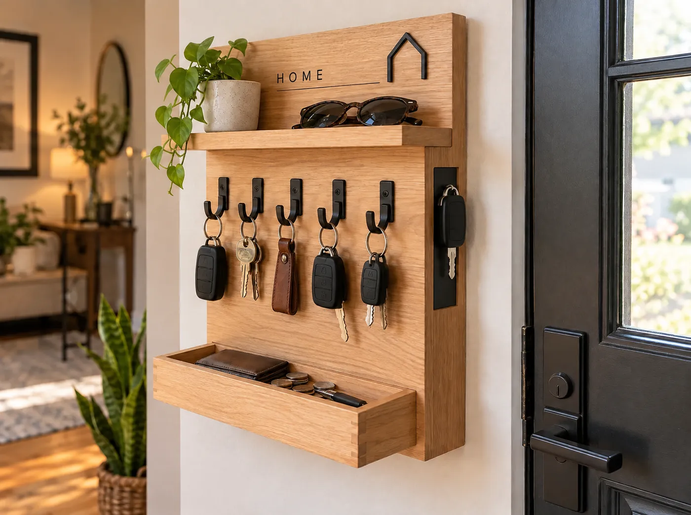
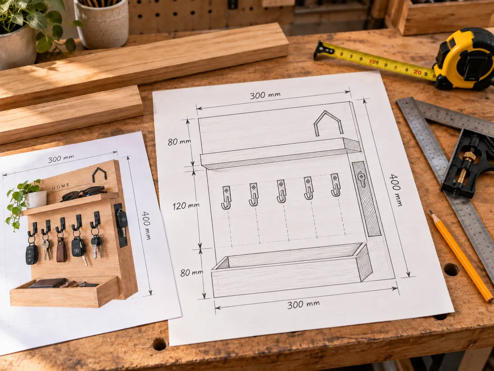
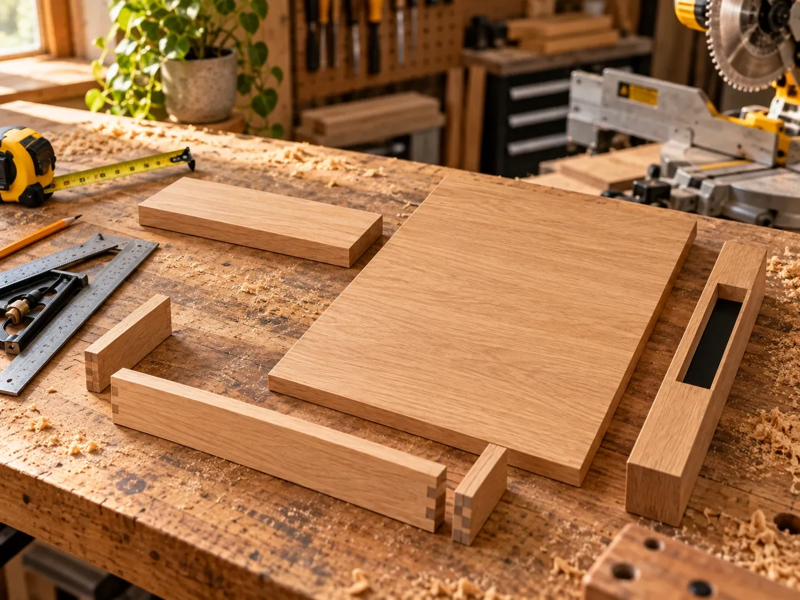
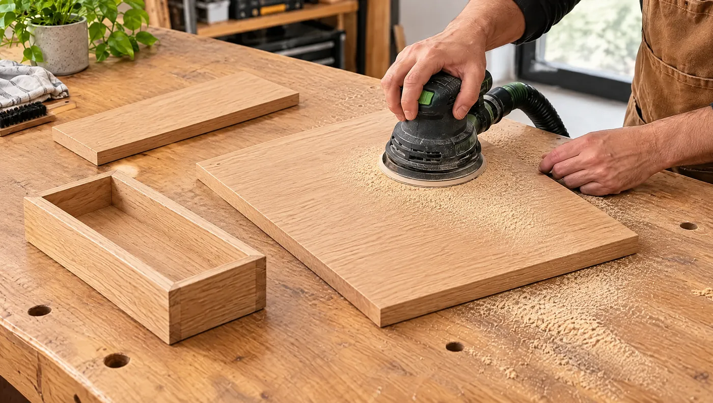
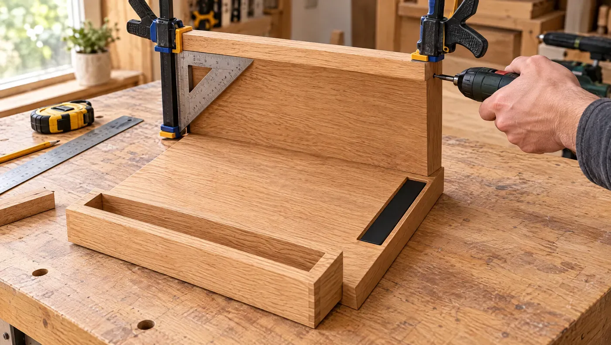
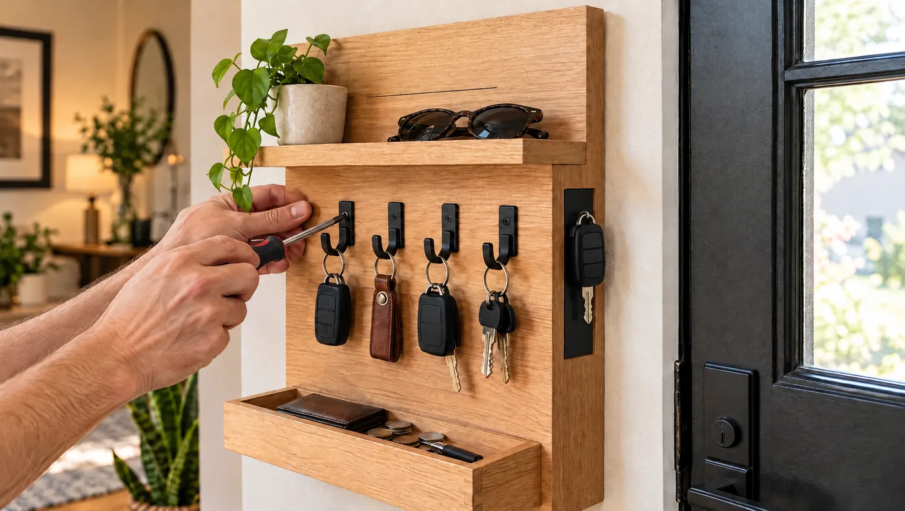
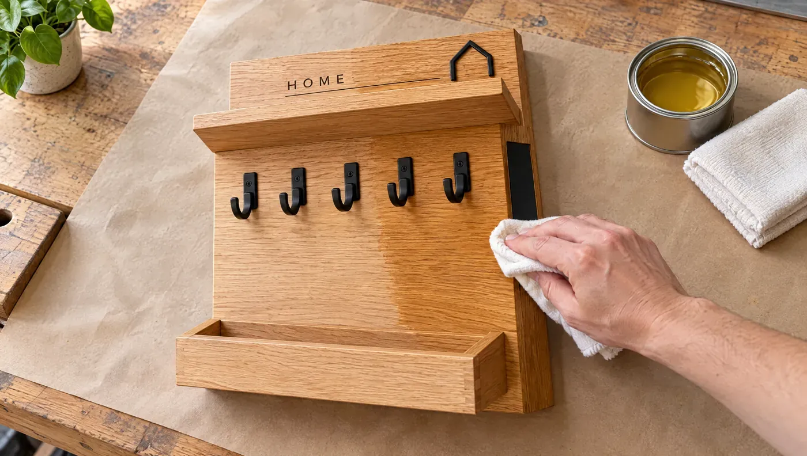
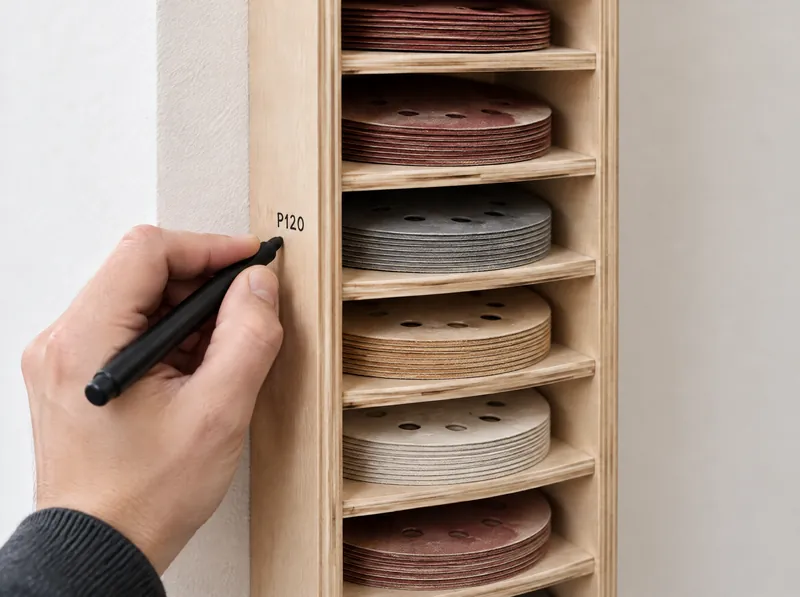

Polička na kľúče pri dverách
Malá stanica pri vchode: päť háčikov na kľúče, polička na okuliare, vanička na peňaženku a magnetický pás na kľúč, ktorý berieš najčastejšie.
- Rozmer
- 30 × 40 × 10 cm
- Háčiky
- 5 ks + magnet
- Čas
- cca 3 hodiny + schnutie
- Náročnosť
- stredná

Jedno miesto na všetko, čo berieš pri odchode
Nejde o dekoráciu, ale o malú stanicu pri dverách, ktorú začneš používať automaticky. Každá časť má jednu úlohu.
- Päť samostatných háčikov na zväzky kľúčov.
- Horná polička na okuliare alebo drobnosti.
- Spodná vanička na peňaženku, mince či slúchadlá.
- Magnetický pás na kľúč, ktorý odkladáš jedným pohybom.
Rozmery sú navrhnuté pre bežnú stenu pri vchode. Ak máš viac kľúčov, predĺž dosku na 40 cm a pridaj dva háčiky.
Materiál a náradie
Odškrtávaj, čo už máš pripravené. Stav si zapamätá tento prehliadač.
Drevo (dub alebo jaseň)
Kovanie a povrch
Náradie
Postup v 7 krokoch
Najdlhšie trvá schnutie lepidla a oleja. Samotná práca zaberie jedno popoludnie.
-

1 z 7Najprv si projekt načrtni na papier
Zakresli celkový rozmer, hornú poličku, päť háčikov, vaničku aj magnetický pás. Rozloženie si tak overíš skôr, než začneš rezať drevo.
Prečo papierPapier stojí pár centov. Chyba na dubovej doske môže stáť celý kus materiálu.
-

2 z 7Narež všetky diely naraz
Podľa náčrtu priprav zadnú dosku, hornú poličku a diely vaničky. Keď režeš všetko v jednej etape, ľahšie udržíš rovnaké rozmery a pravé uhly.
Označ si dielyHneď po reze napíš na každý diel ceruzkou, čo je zač. Pri skladaní nebudeš hádať.
-

3 z 7Vyhlaď povrch a jemne zraz hrany
Odstráň stopy po píle. Najprv prebrús plochy zrnitosťou P120, potom P180 a nakoniec jemne zraz ostré hrany. Olej potom sadne rovnomerne.
NetlačNech brúska pracuje vlastnou váhou. Na hranách zostaň len krátko, aby si ich nezaoblil.
-
4 z 7
Zlep vaničku rovno, svorky len držia tvar
Vaničku najprv poskladaj nasucho a skontroluj, že diely sedia bez pnutia. Potom nanes tenkú vrstvu lepidla a stiahni ju svorkami.
Kontrola 90°Pred úplným dotiahnutím polož do rohu uholník. Vytlačené lepidlo hneď zotri vlhkou handrou.
-

5 z 7Hornú poličku vyrovnaj na 90° a upevni zozadu
Poličku usaď nasucho, pritiahni svorkami a uholníkom skontroluj pravý uhol. Až potom ju priskrutkuj zo zadnej strany dosky, aby čelo ostalo čisté. Rovnako upevni aj vaničku.
TestPolož na poličku malý predmet. Ak sa nikam nekotúľa, je rovno.
-

6 z 7Namontuj päť háčikov a magnetický pás
Rozmeraj päť rovnakých rozstupov a háčiky dotiahni v jednej línii. Do bočnej hrany vyvŕtaj Forstnerovým vrtákom 2–3 plytké otvory na magnety, zalep ich a prekry čiernym kovovým pásom.
Jedna líniaNatiahni si ceruzkou vodorovnú čiaru a háčiky dávaj na ňu. Krivý rad je vidieť z celej chodby.
-

7 z 7Naolejuj a ukotvi na stenu
Nanes tenkú vrstvu oleja v smere vlákien, po chvíli zotri prebytok a nechaj vytvrdnúť podľa návodu výrobcu. Potom poličku ukotvi skrytými závesmi.
Kotva podľa stenySadrokartón, tehla a betón potrebujú každý iné upevnenie. S kľúčmi a vaničkou nesie polička viac, než sa zdá.
Hotovo. Vyskúšaj ju naostro
Zaves kľúče, polož okuliare a peňaženku. Ak po týždni všetko odkladáš automaticky na jedno miesto, polička robí, čo má.

Ďalší návodZakladač na brúsne kotúče